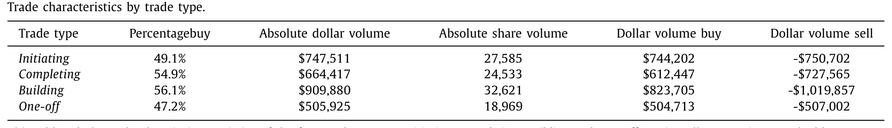
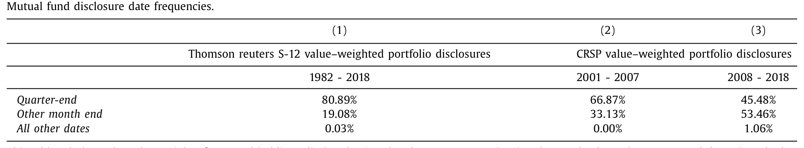
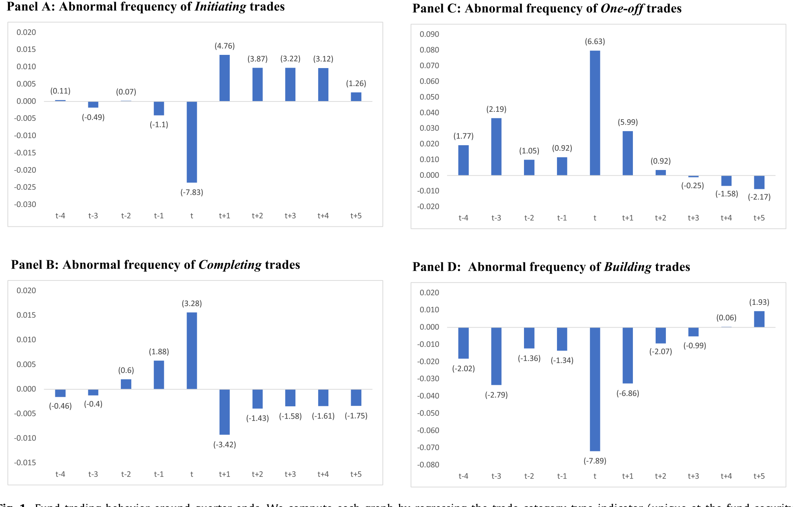
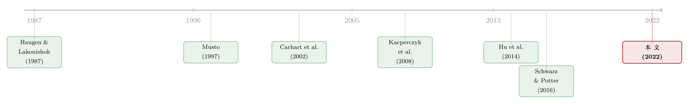

披露越「漂亮」，价格越「糊涂」？——基金如何围着季末的截止线排兵布阵
本文读的是 Gormley, Kaplan & Verma (2022, Journal of Financial Economics)：基金的交易会随季度报告周期系统性地起伏——它们在季末加速完成已有头寸、却把新头寸的建仓推迟到下个季度初。这套节奏的动机是「让披露更能预示未来持仓，又不暴露尚未建好的仓位」。代价是：恰恰在大多数基金记录持仓的季末，股价的信息含量下降、佣金支出也下降。一句话——更详尽的披露，反而换来了更糊涂的价格。
1 一个民间的直觉，和一个学术的悖论
先讲一个华尔街的「都市传说」。CNBC 的 Jim Cramer 有个说法，叫「季末现象」（quarter-end phenomenon）——一种弥漫在交易员之间的感觉：每逢季末那几天，价格仿佛变得不太「正常」，不再忠实地反映基本面。散户嗤之以鼻，学者也长期把它当成传闻。
但传闻背后藏着一个真正让人不安的问题。我们一直相信，信息披露是好东西。基金每季度要把持仓报给 SEC（Form 13F、N-CSR、N-Q），又自愿报给 CRSP、Morningstar、Thomson Reuters 这些数据商；资产管理人盯着这些持仓做配置，资金流也会跟着媒体对持仓的报道而动（Solomon et al., 2014；Hartzmark and Sussman, 2019）。按照主流的看法，披露能约束基金经理去做研究、去交易，把信息更快地压进价格——披露的信息外部性，应该是正的（Leuz and Wysocki, 2016）。
于是悖论来了：如果披露让市场更聪明，为什么偏偏在「披露最密集」的季末，价格会显得更笨？
这正是本文标题里那个反问句的来源：More Informative Disclosures, Less Informative Prices? 作者要论证的，是一件听上去自相矛盾、却逻辑自洽的事——披露变得更能预示未来，价格却变得更不反映当下。
要回答这个问题，第一步甚至不是跑回归，而是先看清楚基金到底在季末做了什么。而这恰恰是本文最漂亮的一手。
2 把每一笔交易，按它的「前世今生」分类
通常我们看基金交易，只能看到「买」或「卖」、量是多少。但这篇论文的关键洞见是：同样一笔买入，含义可以完全不同。一笔买入如果是某段建仓的开头，它预示着接下来还会继续买；如果是一段建仓的收尾，它只是把已有计划做完。前者携带「关于未来」的信息，后者不携带。
作者用 Abel Noser 的 Ancerno 机构交易数据（约覆盖 CRSP 成交量的 12%，样本期 1998–2010）做了一件别人没做过的事：把每一笔交易，按它与前后四周同一基金、同一只股票交易的符号关系，分成四类。
记 Sign(Vol_t) 为当日交易方向，Sign(Vol_previous)、Sign(Vol_subsequent) 为前、后四周净交易的方向，分类规则是一张干净的 2×2：
被过去交易预示Sign(Vol_t)=Sign(Vol_prev) |
不被过去交易预示Sign(Vol_t)≠Sign(Vol_prev) |
|
|---|---|---|
预示未来交易Sign(Vol_t)=Sign(Vol_sub) |
建仓中 (Building, 44.2%) | 初始建仓 (Initiating, 17.6%) |
不预示未来交易Sign(Vol_t)≠Sign(Vol_sub) |
完成建仓 (Completing, 18.0%) | 一次性 (One-off, 20.2%) |
这套语言一下子让「季末现象」变得可测。直觉上：初始建仓（Initiating） 是最「含信息」的交易——它是基金根据新判断刚刚迈出的第一步，预示着一段尚未走完的路；而 完成建仓（Completing） 与 一次性（One-off） 交易，要么是把旧计划收尾，要么是孤立的再平衡，几乎不预示未来。四类交易的平均特征也各不相同：如表 2 所示，One-off 交易更偏卖出、单笔规模最小，Building 交易规模最大。

Table 2
接着，一个自然的问题是：在大多数基金「拍快照」记录持仓的那几天，这四类交易的比例会不会被悄悄地重新洗牌？
3 识别策略：让季末的截止线自己说话
本文的识别，建立在一个干净的制度事实上：基金记录持仓的日子高度集中。如表 1 所示，在 Thomson Reuters S-12 数据里，按市值计 80.89% 的持仓都记录在日历季末（3、6、9、12 月的最后一个交易日），剩下几乎都落在其他月末（19.08%）。即便 2008 年后 CRSP 改用 Lipper 数据、SEC 强制披露的比重上升，季末记录仍占到约 45%——是其他月末的两倍。换句话说，季末就是绝大多数基金的「交卷截止线」。

Table 1
有了这条截止线，剩下的就是比较「截止线前后」交易构成的变化。作者构造了四个哑变量：Qtr_End（日历季末最后一个交易日）、Month_End（其他月份的月末）、Qtr_Beg（季度第一个交易日）、Month_Beg（其他月份首日）。然后对四个交易类型的指示变量（在 基金 i — 股票 s — 日期 t 层面唯一）跑一条简单的线性回归：
$$ Trade\_Cat_{ist} = \alpha + \sum_{n=-4}^{5} \gamma_n\, QTR\_End_{t-n} + \varepsilon_{ist} $$
其中 Qtr_End_{t-3} 表示季末前第三个交易日、Qtr_End_t 表示季末当天、Qtr_End_{t+3} 表示季末后第三个交易日。系数 \(\gamma_n\) 描出的，就是每一类交易在季末前后逐日的频率曲线——相对于「平常日子」，某类交易在距季末第 n 天是更多了还是更少了。这套设计的好处在于：它不依赖任何关于「基金该怎么交易」的结构假设，只是让数据围着一条外生的日历截止线，自己显形。
4 主要结果：加速收尾，推迟开局
结果非常干净，而且对称得像是被精心编排过。如图 1 所示，围绕季末，四类交易呈现出镜像般的此消彼长。

Figure 1: Fund trading behavior around quarter-ends. We compute each graph by regressing the trade category type indicator (unique at the fund-securit
第一组反差，发生在「初始建仓」上。 相对于平常日子，基金在季末最后一天发起新头寸的概率低 13.6%；但一跨过季末，到季度第一天，发起新头寸的概率又高出 7.4%。也就是说，基金把「开新仓」这件事，硬生生从季末挪到了季初。
第二组反差，正好相反，发生在「完成建仓」上。 季末前，完成已有头寸的交易显著增多——基金在赶在交卷前把手里的活儿收尾。
第三组反差，在「一次性」与「建仓中」交易上。 季末附近一次性交易激增：一笔交易在季末当天是 one-off 的概率高出 40.1%，在季初也高出 14.2%；而正在「建仓中」的交易则相应减少。其他月末也能看到同样的模式，只是幅度衰减——这与「季末才是主要截止线」完全吻合。
把这三组放在一起，季末基金的画像就清晰了：赶着把旧仓收尾、把零碎头寸调整到位，却按住了新仓不发。 这不是随机的噪声，而是一种围着披露日的、有意的排兵布阵。
5 但真正关键的一步：动机不是「拉抬」，而是「修饰未来」
看到季末买盘上升，很多人的第一反应是——这不就是拉抬净值（portfolio pumping）吗？ 基金在季末猛买自己的重仓股，把价格顶上去、把账面净值做漂亮（Carhart et al., 2002；Hu et al., 2014）。这是个现成的、也很有名的故事。
然而作者把它排除了。如果是 pumping，季末的买盘应当集中在基金的大持仓、且集中在买入方向（因为只有顶住自己持有的股票才能抬高净值）。但数据说不是：季末的动态在买和卖两个方向、在每一类交易上都对称出现；完成建仓与一次性买入的增加，也没有集中在基金的较大持仓上——而这正是「按市值计价」动机最强的地方。pumping 解释不了这套镜像式的节奏。
（关于拉抬净值的另一面，可参见《当「拉抬净值」从明星基金经理转移到了他的同事身上》。）
于是反转出现了。真正驱动这套节奏的，是一种披露管理（disclosure management） 的双重诉求：
- 一方面，让披露更能预示未来。 基金加速完成已有头寸、做掉零碎的再平衡，是为了让季末「快照」尽可能反映自己计划中的、未来要持有的配置——好让分析师和大客户（Edward Jones、JP Morgan 这类做「归因测试」的机构）看到一份干净、可解释、与策略一致的组合。
- 另一方面，避免暴露未完成的头寸。 一段刚开头的建仓，如果在季末被拍进快照，等于把一个「还没建好、也还不想拿出来讨论」的意图提前曝光。所以基金宁愿把新仓推迟到季初，给自己留出把仓位悄悄建满的时间。
这个动机有一个可证伪的推论，而数据支持它：初始建仓的推迟，在流动性差、小盘的股票上更严重——因为这类股票需要慢慢建仓以免造成价格压力；季初才开始的建仓「战役」规模更大、铺开的交易笔数更多；而那些更难管理流动性的基金（更小、交易更不频繁的）也更倾向于把建仓推到下个季度。一切都指向「为披露而调度交易时点」，而非「为净值而拉抬」。
6 落点：披露更聪明，价格却更糊涂
现在可以回到那个悖论了。
净效应上，这套调度其实提高了披露的信息含量——作者发现，季末的组合比平常日子的组合，更能预测基金未来的持仓。推迟新仓本会降低披露的信息量，但「加速把计划中的头寸做到位」带来的增益，足以盖过它。也就是说，从「披露能否预示未来持仓」这个角度看，季末的快照确实更 informative。
可价格呢？恰恰相反。如果基金在季末的交易是为了披露（而非基于关于内在价值的新信息），那么这些交易推动的价格变动就不反映基本面，事后会被纠正。证据正是如此：季末当天的回报，对更长期价格变化的解释力显著下降。 量级上很可观——相对于平常日子，季末最后一天的回报对随后 30 天回报的信息含量低了 32%。这一下降在季末前的几个交易日也存在（幅度较小），并且在四个季末上都成立；而在季初首日、以及其他月末，则几乎看不到这种相对的信息含量变化。
最后还有一块独立的佐证：佣金。佣金是基金为「信息/研究」付给券商的对价（Goldstein et al., 2009；Green et al., 2014）。作者发现季末基金支付的佣金下降，而且这一下降是在同一对 基金—券商内部发生的（不是因为季末换了更便宜的券商）；一个基金全年付给某券商的佣金，也在该券商的交易更多落在季末时更低。佣金降，意味着季末的交易更少建立在新信息之上——又一次指向 disclosure-driven 而非 information-driven。
这就是本文最不舒服、也最重要的结论：披露的信息外部性未必是正的。在大多数基金交卷的季末，提供更详尽的持仓信息，反而扭曲了二级市场的价格——更漂亮的披露，买来了更糊涂的价格，以及随后的反转。
7 文献脉络
要理解这篇论文的位置，得把它放进一条关于「披露如何反过来塑造交易」的脉络里。
最早的火种来自 Haugen and Lakonishok (1987)：他们提出「一月效应」可能源于机构为了让年报好看，在年末抛售小盘股、年初才买回——这是「窗饰」（window dressing）思想的雏形。Musto (1997, 1999) 把它做实，证明组合披露会引发年末的价格漂移、并影响投资决策。Lakonishok et al. (1991) 直接记录了养老金经理的窗饰行为。

进入 2000 年代，这条线分出两支。一支是操纵/欺骗：Carhart et al. (2002) 的「leaning for the tape」记录了季末拉抬净值的博弈行为，Hu et al. (2014) 用日度交易刻画机构的年末交易。另一支是披露的信息价值：Kacperczyk et al. (2008) 提出基金存在「未被观测的行动」，Solomon et al. (2014) 与 Hartzmark and Sussman (2019) 则证明被披露、被报道的持仓确实牵动资金流。与此同时，Schwarz and Potter (2016) 厘清了披露日期的制度细节——正是本文识别策略的基石。
本文站在这两支的交汇处，却给出了一个新的、更细腻的机制：以往文献多强调披露让基金去「欺骗」或「隐藏」（从而 less informative），而本文指出，披露还让基金调整交易战役的时点——推迟开局、加速收尾——其结果是披露更能预示未来，价格却更不反映当下。这是对「信息外部性为正」这一默认假设的一次正面挑战。
8 评论与延伸（Q&A + 研究方向）
(a) 几个可能的疑问
Q：这和传统的「窗饰」(window dressing) 到底有什么不同？
窗饰的核心是「掩盖过去」——卖输家、买赢家、藏风险，目的是让披露 less informative。本文的机制是「修饰未来」：通过加速完成计划中的头寸、推迟暴露未完成的新仓，让快照更贴近计划中的配置，结果披露反而 more informative about future holdings。两者方向相反，这正是本文的新意。
Q：季末买盘上升，凭什么不是拉抬净值 (portfolio pumping)？
因为分布不对。拉抬净值应集中在大持仓、买入方向；而本文的季末动态在买卖两侧、各交易类型上对称出现，且 completing/one-off 买入并未集中在大持仓上。pumping 解释不了这种镜像式的此消彼长。
Q：价格信息含量下降 32% 是怎么测的？会不会只是流动性季节性？
它度量的是「季末当日回报」对「随后 30 天回报」的解释力，季末显著偏低。最大的担忧确实是季末交易量/流动性本身的季节性可能独立地压低这种解释力。作者用「季初首日与其他月末几乎无此效应」来部分缓解——若是纯流动性季节性，季初也应受影响。
Q：如果披露更能预测未来持仓是好事，为什么价格更糊涂算坏事？
关键在「为何而交易」。基金为了披露的形象去交易，这些交易脱离内在价值，制造了不反映基本面的价格波动与随后的反转。对依赖价格做配置的外部投资者而言，季末的价格信号更不可靠——这就是负的信息外部性。
Q：Ancerno 只覆盖约 12% 的成交量、且基金匿名，结论能外推吗？
覆盖面有限、且因匿名无法识别各基金的财年末（fiscal year-end），这是真实的局限。但好处在于季末是日历季度的制度截止点、对几乎所有基金共同适用；匿名也不妨碍用 manager code 追踪同一基金跨股票、跨时间的交易序列——而后者正是本文分类法所需的全部。
Q：佣金下降，能算多硬的证据？
算是一块独立的、方向一致的拼图。佣金是买「信息/研究」的对价；季末佣金降、且在同一对 基金—券商内部下降（排除了「换便宜券商」），说明季末交易更少基于新信息——与「disclosure-driven 而非 information-driven」相互印证。
(b) 几个可能的研究问题与提案
1. 公司债市场的「季末现象」 - 【经济故事】公司债基金同样按季披露持仓，但债券更 illiquid、定价更不透明、建仓更慢。本文逻辑预测：completing 的加速与 initiating 的推迟在债券里应当更强，对季末债券价格信息含量的扭曲也更大。 - 【可行性】中。需 TRACE 成交 + N-PORT/Morningstar 基金持仓，识别仍用 calendar quarter-end 哑变量。难点是债券「价格信息含量」的度量本身就难（可参见《把「成交价」从「成交量」里解放出来——重新丈量公司债的流动性》）。
2. 外资持有人是否同样围着季末调仓 - 【经济故事】外国机构作为 13F 申报人，也受季末披露约束。它们的季末调度会如何影响美国公司债的流动性？外资若集中在季末完成/退出头寸，可能在季末放大债券流动性的周期性波动。 - 【可行性】中。需 eMAXX/13F 持仓 + TRACE，按持有人国籍切分。识别上可用持有人构成的横截面差异与 calendar quarter-end 交互。
3. N-PORT 月度披露改革的前后效应 - 【经济故事】2019 年后 SEC 要求基金按月报告组合（虽延迟公开）。如果季末扭曲源于「季度截止线」，那么报告频率提高、截止线变密，季末的聚集与价格扭曲应当被削弱。 - 【可行性】高。制度断点清晰，可做改革前后的双重差分 (difference-in-differences, DiD)，处理组为受 N-PORT 约束的基金。
4. 季末「扭曲」可不可被套利？ - 【经济故事】既然季末价格变动事后被纠正，季末反向（buy-the-reversal）策略应有正 alpha。问题是：扣掉交易成本后还剩多少？这能反过来度量这种扭曲的「真实大小」。 - 【可行性】高。CRSP 日度数据现成，构造季末日横截面反转组合即可。
5. 委托单层面的价格冲击差异 - 【经济故事】若 disclosure-driven 的交易（季末的 completing/one-off）确实脱离基本面，它们的价格冲击 (price impact) 结构应当与 information-driven 的 initiating 不同。直接比较两类交易的冲击曲线，可为本文机制提供微观佐证。 - 【可行性】中。需 Ancerno 委托单层面数据与执行细节，可借鉴基于 Ancerno 的执行成本研究（参见《同一只股票，两个柜台：基金经理在哪儿下单，泄露了他的「本事」》）。
9 我的判断
这篇论文最大的贡献，是把一个含混的民间直觉（「季末现象」）翻译成了可测、可证伪的机制，而它的杠杆点就是那套四分类的 measurement——把「买/卖」升级为「这笔交易在一段战役里处于什么位置」。一旦有了这把尺子，「加速收尾、推迟开局」的镜像节奏几乎是自己跳出来的；而「披露更 informative、价格更不 informative」这个看似矛盾的结论，也因此变得逻辑自洽。它对「披露的信息外部性恒为正」这一隐含假设构成了有分量的反例。
对识别，我有两点保留。其一，价格信息含量的度量与季末的流动性/成交量季节性纠缠在一起，作者用「季初与其他月末无此效应」来切割，但这更像是缓解而非彻底排除——若能找到一个只改变披露截止线、不改变流动性日历的外生冲击，会更有说服力。其二，Ancerno 的匿名与 12% 覆盖限制了对「财年末≠日历季末」基金的刻画，而这部分恰恰是检验机制最干净的样本（它们的披露截止线与日历季末错开）。
后续我最想看到的，是把这套逻辑搬到信用市场：债券更慢、更不透明，季末扭曲若存在则应更大，而它对公司债流动性与发行定价的含义，可能比股票市场更有政策意味。如果 N-PORT 的月度披露真的能熨平这种季末扭曲，那它就不只是一篇解释「都市传说」的论文，而是一份关于「披露频率该如何设计」的证据。
参考文献
- Campbell, J.Y., Grossman, S.J., Wang, J. (1993). Trading volume and serial correlation in stock returns. Quarterly Journal of Economics 108(4), 905–939.
- Carhart, M.M., Kaniel, R., Musto, D.K., Reed, A.V. (2002). Leaning for the tape—evidence of gaming behavior in equity mutual funds. Journal of Finance 57(2), 661–693.
- Chakrabarty, B., Moulton, P.C., Trzcinka, C. (2017). The performance of short-term institutional trades. Journal of Financial and Quantitative Analysis 52(4), 1403–1428.
- Goldstein, M.A., Irvine, P., Kandel, E., Wiener, Z. (2009). Brokerage commissions and institutional trading patterns. Review of Financial Studies 22(12), 5175–5212.
- Green, T.C., Jame, R., Markov, S., Subasi, M. (2014). Access to management and the informativeness of analyst research. Journal of Financial Economics 114(2), 239–255.
- Gormley, T.A., Kaplan, Z., Verma, A. (2022). More informative disclosures, less informative prices? Portfolio and price formation around quarter-ends. Journal of Financial Economics 146(2), 665–688.
- Hartzmark, S.M., Sussman, A.B. (2019). Do investors value sustainability? A natural experiment examining ranking and fund flows. Journal of Finance 74(6), 2789–2837.
- Haugen, R.A., Lakonishok, J. (1987). The Incredible January Effect—The Stock Market's Unsolved Mystery. Irwin Professional Pub.
- Hu, G., Jo, K.M., Wang, Y.A., Xie, J. (2018). Institutional trading and Abel Noser data. Journal of Corporate Finance 52, 143–167.
- Hu, G., McLean, R.D., Pontiff, J., Wang, Q. (2014). The year-end trading activities of institutional investors: Evidence from daily trades. Review of Financial Studies 27(5), 1593–1614.
- Kacperczyk, M., Sialm, C., Zheng, L. (2008). Unobserved actions of mutual funds. Review of Financial Studies 21(6), 2379–2416.
- Lakonishok, J., Shleifer, A., Thaler, R., Vishny, R. (1991). Window dressing by pension fund managers. American Economic Review 81(2), 227–231.
- Leuz, C., Wysocki, P.D. (2016). The economics of disclosure and financial reporting regulation: Evidence and suggestions for future research. Journal of Accounting Research 54(2), 525–622.
- Musto, D.K. (1997). Portfolio disclosures and year-end price shifts. Journal of Finance 52(4), 1563–1588.
- Musto, D.K. (1999). Investment decisions depend on portfolio disclosures. Journal of Finance 54(3), 935–952.
- Schwarz, C.G., Potter, M.E. (2016). Revisiting mutual fund portfolio disclosure. Review of Financial Studies 29(12), 3519–3544.
- Solomon, D.H., Soltes, E., Sosyura, D. (2014). Winners in the spotlight: Media coverage of fund holdings as a driver of flows. Journal of Financial Economics 113(1), 53–72.